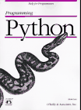

Обзор

Этот сайт реализует простой веб-интерфейс к учетной записи электронной
почты по протоколам POP/SMTP. С помощью этого интерфейса любой желающий
сможет отправить письмо, но из-за ограничений безопасности вы не сможете
просматривать электронную почту, не определив параметры своей учетной
записи на почтовом сервере. Веб-приложение PyMailCGI реализовано как набор
CGI-сценариев на языке Python, выполняющихся на сервере (не на вашем
локальном компьютере) и генерирующих разметку HTML при взаимодействии
с браузером. Подробности смотрите в книге Программирование на Python,
4-е издание.
|
Примечания
Внимание: Версия PyMailCGI 1.0 первоначально была создана во время
2-часового ожидания вылета из чикагского аэропорта O'Hare. Эта версия
не такая быстрая и полнофункциональная, как PyMailGUI (например, каждый
щелчок запускает выполнение операции через Интернет, здесь отсутствует
операция сохранения электронной почты и не поддерживается многопоточный
режим выполнения, кроме того, здесь не предусматривается кеширование
заголовков или уже просмотренных сообщений). С другой стороны, PyMailCGI
может взаимодействовать с любым веб-браузером и не требует устанавливать
Python (и Tk) на ваш компьютер.
Если вы решите использовать эти сценарии для чтения своей почты,
то следует учесть, что PyMailCGI не гарантирует безопасность пароля вашей
учетной записи. Смотрите примечания в странице операции просмотра сообщения,
а также дополнительную информацию в книге относительно безопасности.
Новое в версии 2: программа PyMailCGI теперь поддерживает
просмотр и отправку вложений для одного пользователя, и в ней удалось
избежать необходимости излишней повторной загрузкт почты в некоторых случаях.
При отображении страницы со списком она загружает только заголовки
сообщений, а загрузка полного текста сообщения выполняется только
при выборе его для просмотра.
Новое в версии 3: программа PyMailCGI теперь выполняется
под управлением Python 3.x (только) и использует множество новых
особенностей из пакета mailtools: декодирование и кодирование
интернационализированных заголовков, декодирование основного текста
почтового сообщения и так далее. Из-за снижения функциональных возможностей
модуля cgi и пакета email в Python 3.1 версия 3.0 не поддерживает отправку
двоичных вложений или текстовых вложений с несовместимой кодировкой, однако
сохраняется возможность просмотра вложений во входящих сообщениях
(смотрите главы 15 и 16).
Смотрите также:
-
Программу PyMailGUI в каталоге ch14, которая реализует
более полноценный графический интерфейс к электронной почте
на основе Python + Tk
-
Программу pymail.py в каталоге Email, которая реализует
простой интерфейс командной строки к электронной почте
-
Модуль Python imaplib, реализующий поддержку протокола IMAP
электронной почты вместо POP
|
![[Python Logo]](PythonPoweredSmall.gif)